MCSDF 噪声分布全景 — expF · expJ · expM
v2（2026-07-31，经四轮独立对抗校验后修订）· 三个层次的噪声分布（同一帧号的边缘分布 · 帧内空间分布 · 一个 video 内跨帧分布）+ 声明噪声 vs 真实噪声 ·
train / infer 失配量化 · 方法机制（是否用 warp、warp 怎么用、camera control 怎么做）
12 个 DL3DV clip（4 个 parade + 8 个按文件名首序，非随机抽样）· 每方法每分支 4800 个场抽样 · 推理日历 50 步 · 纯调度数学，无模型前向
TL;DR — 四个结论
① 失配不在"支撑"上，在"密度"上。严格未覆盖质量（推理落在训练密度≈0 的 t 区间）三方法都是 0.000 ——
10% rehearsal 的全局标量 t 把训练支撑铺满了 [0,1]。真正的差距是密度：逐帧 W₁
expF 0.041 · expJ 0.039 · expM 0.010（expM 约好 3.8 倍）。
② 失配集中在"最熟悉"的帧。W₁ 与逐帧 knownness 的相关系数 +0.999 / +0.994 / +0.973 ——
越是被观测充分覆盖的帧，train/infer 噪声分布越不一致。
③ PatchForcing 警告的失效模式确实存在，而且是单向的。"帧内出现近乎干净的 token 紧贴近纯噪声的 token"在训练中占
5.12% / 4.18% / 1.76% 的帧，
但在推理的 12,600 个帧状态里出现 0 次（三方法皆然）。来源全部是 branch2 的 patch 场（11.4% / 9.3% / 3.9%），branch1 与 rehearsal 各为 0。
④ expF 有 36.0% 的训练步 t-场是空间常数。min(τ₀,s) 在 s 低于场内最小 τ₀ 时整场坍缩（闭式 57.8%，实测 58.2%±1.8pp），
叠加 rehearsal 后 36.0% vs 11.1% / 10.8%（整卷口径；逐帧口径为 36.6% / 11.1% / 12.8%，见 §4.2）。
注意：这些步里 knownness 仍通过 17ch warp 通道到达模型，缺的是噪声通道里的空间变化。
v1 → v2 更正记录（本页曾发布过的错误数字，已全部更正）。四个独立校验 agent 各自重算了主结论，发现下列问题：
- 逐帧 W₁ 的 expM 值
0.0079（"好 5 倍"） → 0.0104（好约 3.8 倍）。原值是 Monte-Carlo 噪声；校验者用闭式边缘分布重算得到 0.0104。
"expF 推理从 τ≈0.88 起步、训练 τ₀ 均值仅 0.58，差 +0.32" → 该结论撤回。原图用的是 lift 之前的 τ₀；
计入 35% ceiling lift 后，expF 的训练上限确实能达到并超过推理起点，且频率高于推理访问该处的频率。修正后的位置差约 0.16–0.22。"薄覆盖质量 expF 0.311 / expJ 0.033 / expM 0.186" → 该指标撤回。它是 bin 宽与 50 步日历梳状结构的混叠伪影，
换一个 bin 宽后方法排序会翻转，没有 bin-无关的极限。"零 knownness 信号的训练步 36.1%" → 改称"常数 t-场的训练步 36.0%±1.7pp（整卷）/ 36.6%（逐帧）"。knownness 在非 rehearsal 步仍经 warp 通道进入模型，
坍缩的 branch-1 步并不等价于 rehearsal 步。"t_eff 在任何 τ 下都不可能低于 0.47" → 这是总体均值曲线的性质，不是单个 token 的性质。- Level 4 工作点 gap：
expF +0.025 / expJ +0.035 → 按真实 per-token τ 场计算为 +0.024 / +0.027；
原值是把 τ 固定在各自 floor 的标量扫描值（该扫描本身仍有效，已单独标注）。
- 图 4 的两个热图每行各自独立归一化，因此左右两栏不能直接比较绝对密度 —— 已在图注中说明。
- 样本量：训练侧的有效样本数是场抽样数（4800），不是 token 数；一次抽样内 21 帧高度相关。
§1 三个方法分别是怎么做的
| expF (expF_plucker / expF_sync) | expJ (expJ_narrow / expJ_ray) | expM (expM_par / expM_nopl) |
|---|
| 主干 / 可训练 |
Wan I2V-14B · LoRA-64 + 时间调制通路 + 扩展 pemb |
Wan I2V-14B · 同 expF |
Wan T2V-1.3B · full-FT（整个 DiT） |
| Token 布局 |
单序列 21 latent 帧 |
单序列 21 latent 帧 |
平行拼接：[target 21 帧 ‖ source 5 帧 clean]，source RoPE 帧对齐 0-4 |
| 用 Warp？ |
是
17ch = z_mem(16) + k(1) |
是
17ch，同 expF |
否
无 z_mem，内容纯 attention |
| Warp 怎么用 |
零初始化扩展 patch_embedding，每个去噪步都拼进输入；训练时 40% 概率把干净锚点换成 z_mem（仅 k>0 且 t≥0.3）教"修 splat 误差"；rehearsal 步置零 |
同 expF。因窄带起点已接近纯噪声，splat 内容几乎只能走这条通道进入 |
— |
| Camera control |
① warp 重投影（隐式）② 6ch Plücker（显式，共 23ch） |
narrow 臂：仅 warp 重投影
ray 臂：+6ch Plücker |
par 臂：双半区 6ch Plücker
nopl 臂：无显式 |
| 噪声上限 / 速率 |
τ₀ = clamp(1−.95k, .45, 1) + 35% lift |
τ₀ = 1−.2k ∈ [.8, 1] + 35% lift |
完成时刻 T = 1−.5k；上限恒为 1 |
训练 t-场
10% reh / 45% b1 / 45% b2 |
b1 legacy: min(τ₀, s)
b2: upatch·τ₀ |
b1 sync 切片: clamp(τ₀−c, .02, 1)
b2: upatch·τ₀ |
b1 rate 切片: clamp(1−c/T, .02, 1)
b2: 有界时钟抖动后同式 |
| 推理（50 步） |
cluster-τ(λ.95, τmin.85) + SYNC |
cluster-τ(λ.2, τmin.80) + SYNC |
rate-sync：ti(e)=clamp(1−e/Ti) |
| 推理 init |
SDEdit：(1−τ)·z_mem + τ·ε |
SDEdit（窄带 → 更接近纯噪声） |
纯噪声 ε |
expJ 完整 pipeline
从离线缓存到训练一步、到 50 步推理，所有公式与常数取自实际代码（mcsdf_expJ.sbatch · train.py train_step ·
model.py mcsdf_forward · cluster_tau_probe.py · expH_sync_sampler.py sample_sync），已由独立校验确认逐条无误。
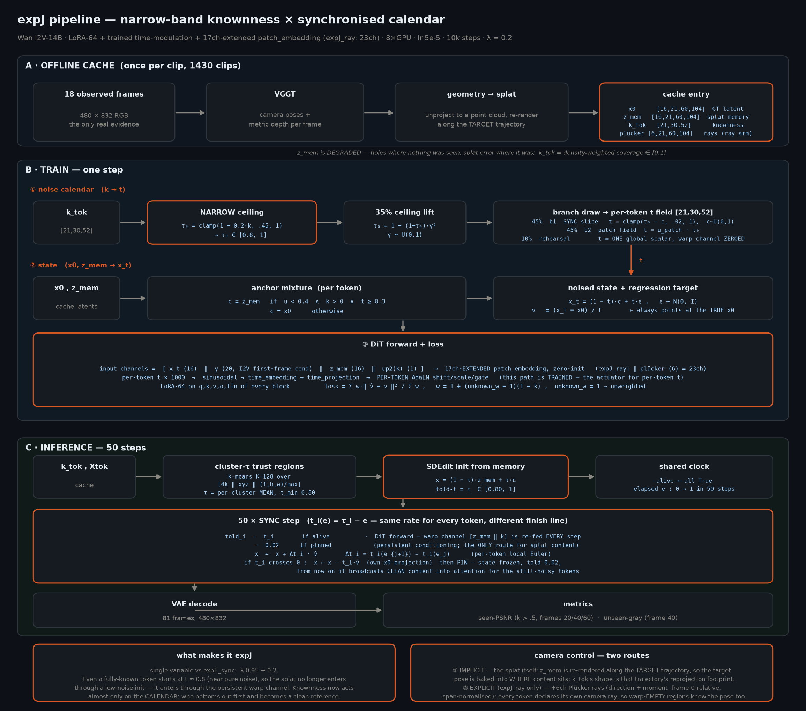
图 0 · expJ pipeline。A 离线缓存（VGGT→splat→z_mem/k_tok/plücker）· B 训练一步（① 噪声日历 + ② 状态 → ③ DiT 前向与 loss）· C 50 步 SYNC 推理。
底部两框：什么使它成为 expJ（λ 0.95→0.2 单变量）、camera control 的两条路径。
expF warp + Plücker
Warp 怎么进：观测帧经 VGGT 几何 splat 到目标视角得到 z_mem（16ch latent，脏、有洞），与 k（1ch）拼成 17ch，
加 6ch Plücker（共 23ch），经零初始化扩展的 patch_embedding 在每个去噪步持久喂入。
本页发现：三者中训练噪声场退化最严重 —— 36.6% 的训练步 t-场是空间常数、branch-1 有 22% 质量压在 t=0.45 单点、
钉住率欠交付 3.2×；而且它的推理场反而是三者中空间异质度最低的（帧内极差被 cluster-τ 的 0.85–1.0 带钉死在 0.150）。
expJ 窄带 × sync
单变量设计：相对 expE_sync 只改 λ：0.95→0.2。窄带 τ₀∈[.8,1] 意味着已知 token 的起点也接近纯噪声 ——
splat 内容主要通过 17ch warp 通道（每步在场）而非 SDEdit 初始化进入。
本页发现：形状与推理同族，残差几乎是纯粹的位置偏移（训练平均 t 比推理高 +0.039，三者最大）；
它的失效方向与 expF 相反且温和得多：形状对、强度系统性偏弱（推理 std 在 50 步里有 34 步高于均值匹配训练集的 p75）。
expM 无 warp · rate-sync
内容怎么进：无 z_mem、无 17ch 通道。source = 前 5 个干净 ctx latent 帧作为平行 token 半区（told 钉 0.02，RoPE 帧对齐），
内容经 self-attention 搬运；loss 只在 target 半区。
本页发现：逐帧 W₁ 好约 3.8 倍、钉住率几乎精确复现（1.02×）、状态声明误差按构造为 0；
更关键的是它复现了推理真正需要的帧内形状——"钉住点质量 + 连续噪声带"的双峰结构，训练 40.9% vs 推理 44.0%（expF 2.2% vs 10.0%）。
§2 Spatial — 噪声场长什么样
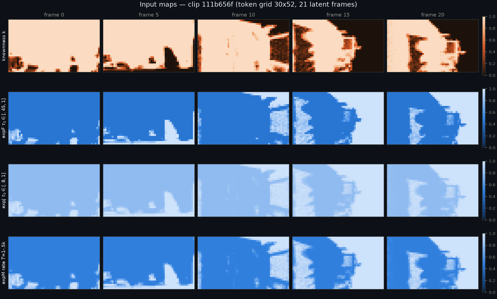
图 1 · 输入地图：knownness k 与三方法的 τ₀ / T 场（帧 0/5/10/15/20）。同一个 k，三种用法 ——
expF 全幅带、expJ 窄带、expM 的速率图（形状同 expF 但语义是"多快画完"而非"从多脏开始"）。
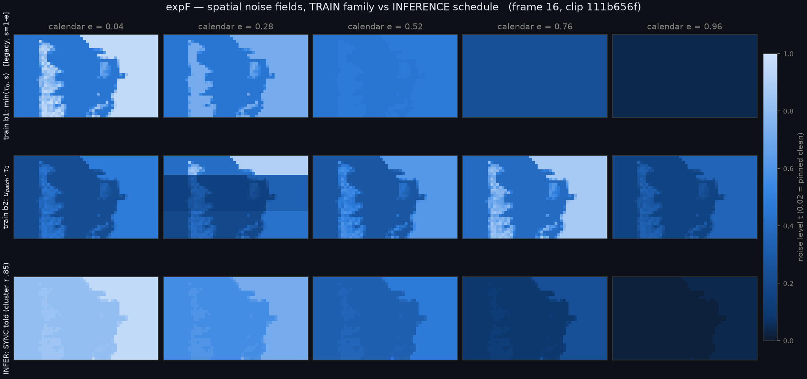
图 2a · expF：train b1 是 min(τ₀,s) 的"截断"形状，推理是 τ−e 的"平移"形状 —— 形状家族不同（帧 16）。
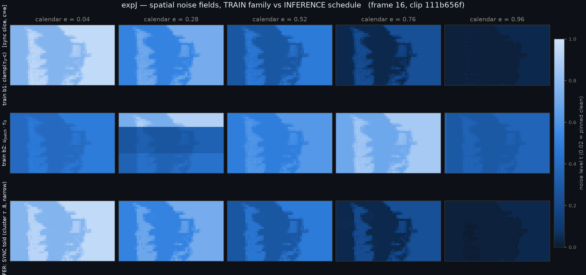
图 2b · expJ：sync 切片训练，与推理同族；窄带使全场都浅。
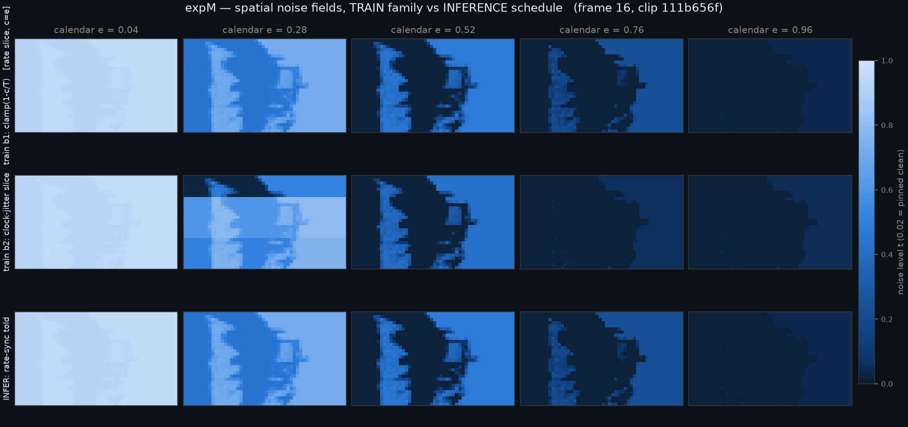
图 2c · expM：train b1 与推理逐格一致；b2 是有界时钟抖动。
§3 Temporal — 谁先下降、谁先画完
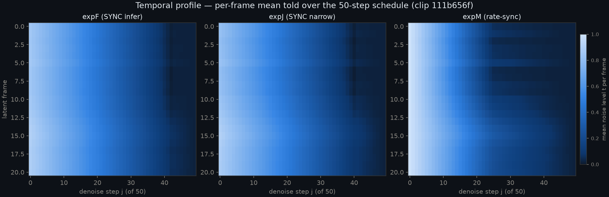
图 3 · 帧 × 去噪步的平均 told。expM 的每帧异速下降与分带钉住是 rate-sync 的签名。
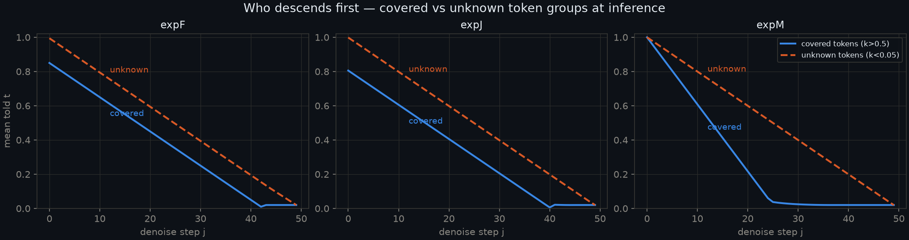
图 3b · covered（k>0.5）vs unknown（k<0.05）：expF/expJ 起点不同、同速；expM 起点相同、速率不同。
§4 分布分析 — 三个层次 + 状态一致性
§2/§3 看的是单个场的样子。这一节看分布：把训练混合分布（10% rehearsal ⊕ 35% lift ⊕ 45/45 两分支）采样数千次，
与推理 50 步实际访问的 told 逐层对比。一个必须先说清的不对称：训练侧是一个分布，推理侧是给定 τ 场后的一条确定性轨迹；
下文所有 "train vs infer" 比较都是"分布 vs 轨迹占据"，W₁ 在此读作"轨迹占据的经验分布与训练分布的距离"。
4.1 同一 frame index 的噪声分布
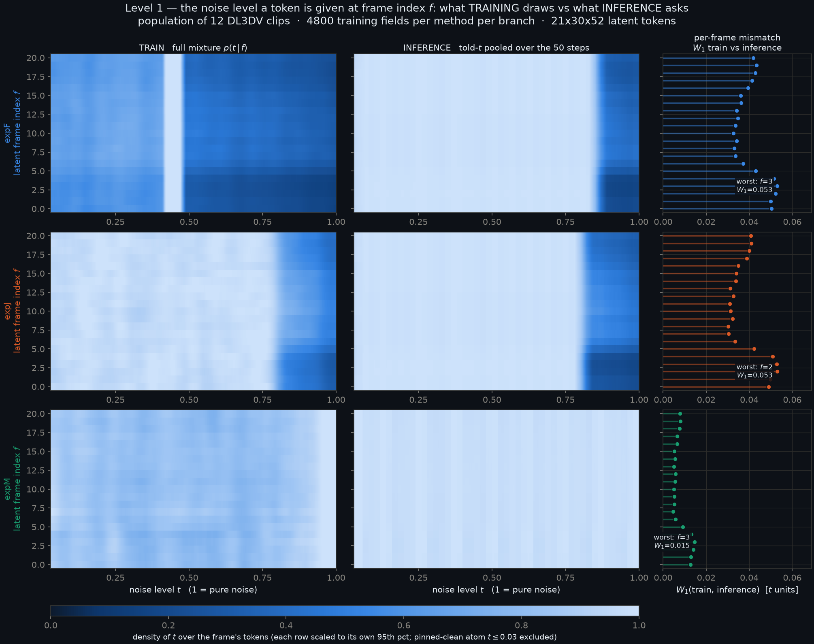
图 4 · 同一帧号的边缘密度：左 = 训练完整混合，中 = 推理 told，右 = 逐帧 W₁。
expF 行（上）在 t≈0.45 有一条亮竖线（τ_min 原子）；expM 行（下）W₁ 尺度只有前两者的约 1/4（注意右列横轴刻度不同）。
推理侧竖条纹是 50 步离散日历的梳状结构。重要读图提醒：左右两栏每一行各自独立归一化到自己的 95 分位，因此可比较"形状"，不能直接比较绝对密度。
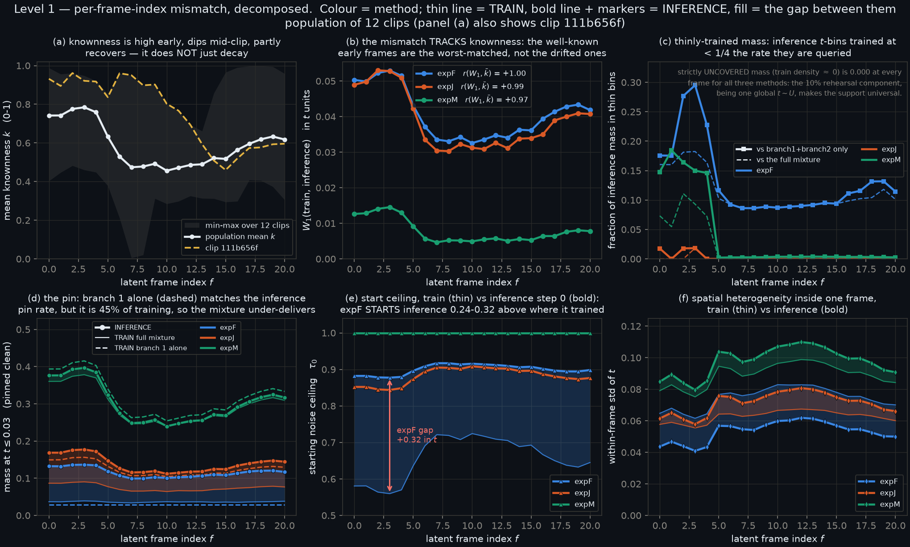
图 5 · 六面板分解。(a) knownness 随帧号的变化（总体上早期高、中段谷、末段部分回升 —— 并非简单单调衰减）。
(b) W₁ 与 knownness 相关系数 +0.999/+0.994/+0.973。(c) 密度比指标 —— 已撤回，见更正记录（bin 宽伪影）。
(d) 钉住质量：branch-1 单独能复现推理的钉住率（expJ/expM），但只占 45%，混合后 expF 欠交付 3.2×。
(e) 起点上限 —— 此面板用的是 lift 之前的 τ₀，已知会夸大差距，正确位置差约 0.16–0.22，见更正记录。
(f) 帧内 std：expF 训练比推理宽约 1.4×（每一帧都如此，不限早期帧），expJ/expM 约 0.85× 偏窄。
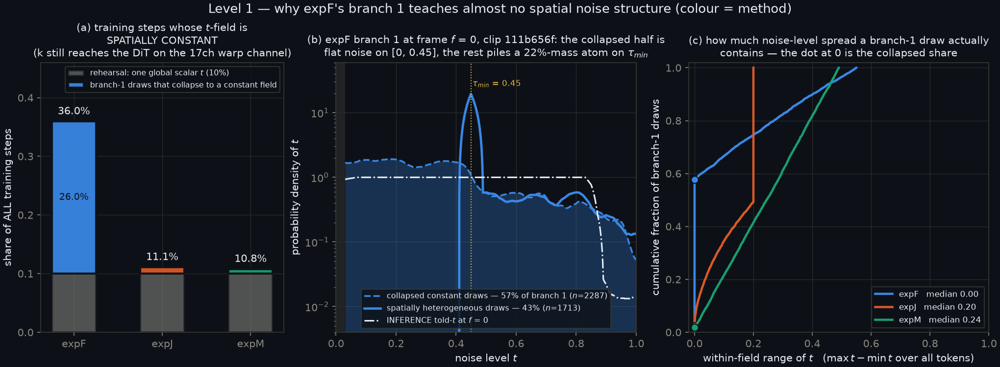
图 6 · expF 的 branch-1 退化。(a) 常数 t-场的训练步占比（整卷口径）：expF 36.0%（10% rehearsal + 26.0% 坍缩 branch-1）vs expJ 11.1% / expM 10.8%。
(b) expF branch-1 在 f=0 的密度：坍缩抽样在 τ_min=0.45 形成尖峰原子（约占 branch-1 全部质量的 22%），推理 told（白色点划线）却集中在 0.85 附近。
(c) expJ 同一位置：98% 抽样空间异质，与推理对齐良好。(c) branch-1 抽样实际含有的噪声水平极差的累积分布：expF 中位 0.00（57% 落在 0 点），expJ 0.20，expM 0.24。
| 指标（12 clips） | expF | expJ | expM | 读法 |
|---|
| 逐帧 W₁ 均值 |
0.041 | 0.039 | 0.010 |
密度失配，t 单位。expM 约好 3.8 倍 |
| 严格未覆盖质量（ε=1e-4 / 1e-3） |
0.000 | 0.000 | 0.000 / 0.004 |
推理不会落进完全未训练的 t 区 —— rehearsal 铺满支撑 |
| 钉住质量比（推理 / 训练混合） |
3.16× | 1.85× | 1.02× |
推理靠"钉住的干净参照"工作，expF 训练时见得太少 |
| corr(W₁, 逐帧 k) |
+0.999 | +0.994 | +0.973 |
失配几乎与 knownness 成正比 |
| 训练平均 t − 推理平均 t |
−0.004 | +0.039 | +0.007 |
expJ 的残差主要是位置偏移，不是形状问题 |
常数 t-场的训练步占比
（整卷口径） |
36.0% ±1.7pp | 11.1% | 10.8% |
branch-1 坍缩（闭式 57.8%，实测 58.2%±1.8pp）+ rehearsal |
4.2 一个 frame 里面的空间分布
这一层直接检验 PatchForcing / LTG 的核心隐患：训练是否给模型看过"帧内既有近乎干净的 token、又有近纯噪声的 token"的配置——
如果看过而推理从不产生，模型就会学会依赖一个推理期不存在的上下文。判据：P(帧内 min < 0.1 且 max > 0.7)。
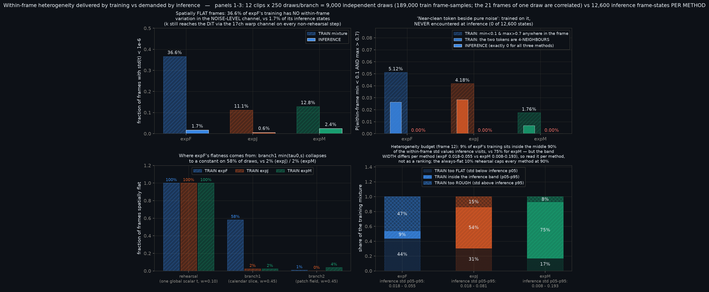
图 7 · 帧内异质度：训练交付的 vs 推理需要的。
左上：空间常数帧的占比（训练 vs 推理）。右上 = 本页最关键的一张：PatchForcing 失效模式在训练中占 5.12% / 4.18% / 1.76% 的帧，
而在 12,600 个推理帧状态里恰好为 0（三方法皆然）。左下：expF 的平坦性来源分解 —— rehearsal 必然平坦（100%），
branch-1 有 58% 坍缩，branch-2 几乎不平坦。右下：异质度预算（帧 12）—— 注意每个方法的推理带宽不同，应逐方法读、不作排序。
| Level 2 判据 | expF | expJ | expM | 读法 |
|---|
P(帧内 min<0.1 ∧ max>0.7)
训练 → 推理 |
5.12% → 0 | 4.18% → 0 | 1.76% → 0 |
PatchForcing 失效模式确实存在且单向：训练见过，推理 12,600 态里 0 次。
来源全部是 branch-2 patch 场（11.4/9.3/3.9%），b1 与 rehearsal 各为 0 |
| 空间常数帧：训练 / 推理 |
36.6% / 1.7% | 11.1% / 0.6% | 12.8% / 2.4% |
三者都过度供应平坦场，expF 尤甚 |
"钉住点 + 噪声带"双峰帧
训练 / 推理 |
2.2% / 10.0% | 6.8% / 16.0% | 40.9% / 44.0% |
推理真正需要的帧内形状；expM 几乎精确复现，expF 欠供 4.5× |
| 推理帧内极差（50 步中位） |
0.150 | 0.200 | 0.249 |
= 1−τ_min。"全幅带"的 expF 其推理场反而最不异质（被 cluster-τ 的 0.85–1.0 带钉死，90% 的步都是 0.150） |
落在推理 std 中间 90% 带内的训练占比
（帧 12；带宽逐方法不同，非排序指标） |
9% | 54% | 75% |
占"可达上限 90%"的比例：10% / 61% / 83%（rehearsal 恒平坦，三方法上限都是 90%） |
| 均值匹配后的训练集内容 |
43% 平坦 | 10.7% | 12.3% |
匹配数据总是存在（6000 抽样中最少 67 个）—— 缺陷在内容而非日历有洞 |
4.3 一个 video 内按 frame index 的分布
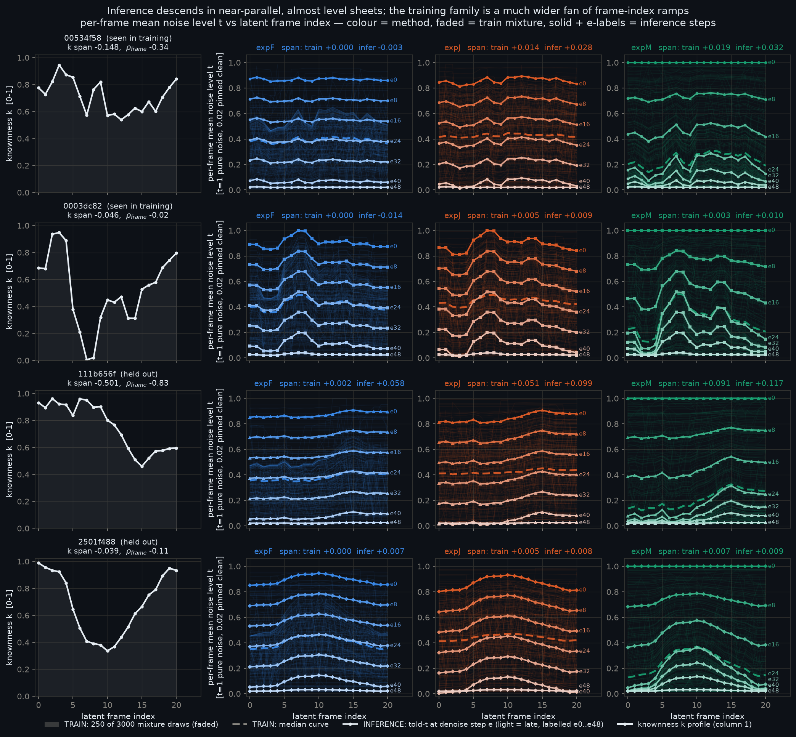
图 8 · 主图（4 clips × 3 方法）。淡色 = 250 条训练抽样曲线，虚线 = 训练中位曲线，实线 + e0…e48 = 推理各步。
推理是一组近乎平行、近乎水平的"薄片"逐层下降，训练曲线族是宽得多的扇形。第一列是该 clip 的 k 剖面 ——
推理侧逐帧 Spearman ρ(k,t) ≈ −0.97…−1.00，t 剖面确实是 k 的镜像。
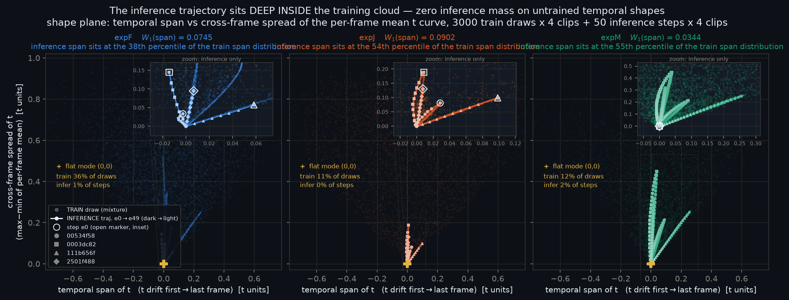
图 9 · 形状平面（span × spread）：训练点云 vs 推理轨迹。推理轨迹始终落在训练支撑内（未训练形状上的推理质量为零），
但反向差距大：训练有 36% / 11% / 12% 的抽样落在"完全平坦"模态 (0,0)，推理只有 1% / 0% / 2%。
W₁(span) = 0.075 / 0.090 / 0.034；推理 span 的中位百分位 38 / 54 / 55（全程范围 17–78 / 18–79 / 12–95）。
但"deep inside"要打折：支撑覆盖成立，局部密度不然 —— 对 expF，推理邻域只落到训练混合的约 0.4–5%。
稳健统计量：在 clip 111b656f 上，训练曲线中有 51.8%（expF）/ 50.1%（expJ）/ 仅 9.6%（expM）比任何一条推理曲线都更陡 ——
expF/expJ 把约一半训练预算花在推理从不使用的时间形状上，expM 只有约十分之一。
已更正的两点：① expF 的 train-span 中位数在两个估计通道给出 0.002 与 0.022，原因是 36% 的场 span 恰好为 0，中位数落在原子上不稳定 —— 故本页不引用该中位数。
② 不能说"expF 的 branch-1 完全不教 knownness 与帧号的耦合"：在未坍缩的那 43% 抽样里，其耦合强度（ρ_k 中位 −0.99）与 expJ/expM 相当，
缺陷是 57% 的坍缩率本身。
4.4 声明的 t 是不是真实的 t（状态一致性）
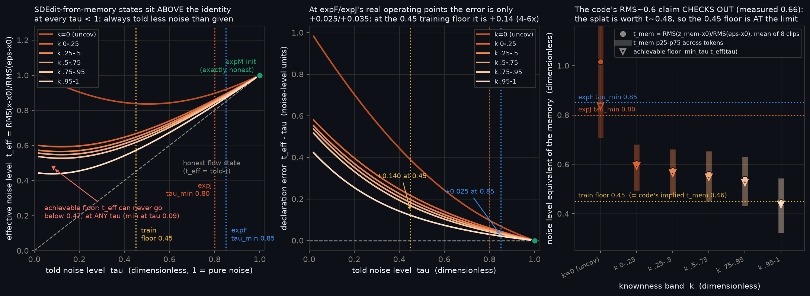
图 10 · 左：teff = RMS(x−x₀)/RMS(ε−x₀) vs told-τ，按 knownness 分带。所有 SDEdit 曲线都在恒等线上方（永远比声明的更脏）；
expM 的 init 落在恒等线上。中：声明误差随 τ 的变化（这是把 τ 固定为标量的扫描曲线）。
右：代码注释 "RMS(z_mem−x₀)≈0.6" 核实成立（实测 0.659，covered token；RMS(ε−x₀)=1.306）。
注：右图 k=0 带的 p25–p75 须线被坐标轴上界截断；左中两图的六条 k 带曲线仅靠颜色区分，可读性有限。
| 量（8 clips） | 数值 | 含义 |
|---|
| RMS(z_mem − x₀)（covered token） | 0.659 | 代码注释声称 ≈0.6 → 核实成立 |
真实 τ 场下的声明误差
（推理实际工作点） |
expF +0.024
expJ +0.027 |
用逐 token 的真实 τ 场计算 —— 实际工作点上状态基本诚实 |
| 标量 τ 扫描：τ=0.45（训练下限） | +0.140 | 低 τ 区不诚实；训练确实在此处见过这类状态 |
| 总体均值 t_eff 的可达下限 | 0.47 @ τ≈0.09 |
z_mem 派生状态的信息天花板。是均值曲线的性质，不是逐 token 的性质 |
| expM 的 gap | 0.000 | x=ε 且 told=1 的构造恒等式，非测量结果 |
这一层的判决与边界：expF/expJ 在实际推理工作点上状态基本诚实（+0.024/+0.027）—— τ_min 设在 0.85/0.80 正为此；
0.45 的训练下限恰好压在 splat 的信息极限（均值 0.47）附近，说明这条设计规则被数据支持。
但必须说明：t_eff 是一个二阶矩（RMS）统计量，它只能说明"状态离 x₀ 的距离"对不对，不能排除结构性/频谱性的失配
（splat 的误差有空间结构，而 ε 是白噪声）—— 要排除需要额外的梯度能量或协方差比较，本页未做。
另一个已知的剩余问题：训练只在 40% 概率、且仅 t≥0.3 时给 covered token 用 z_mem 锚点（构造上限 (1−0.10)×0.40 = 36%），
而推理让每个 covered token 全程从 z_mem 出发，包括 t<0.3 —— 这个 (t, k) 联合支撑差异尚未在本页量化。
§5 场级汇总 — 整场最近邻距离
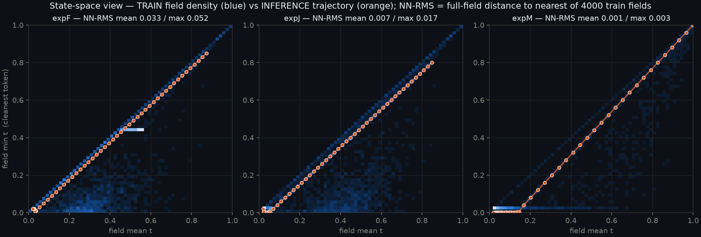
图 11 · 状态空间：训练场密度（蓝）与推理轨迹（橙）。expF 图中 min t=0.45 的水平亮带是 legacy branch-1 的下限烙印。
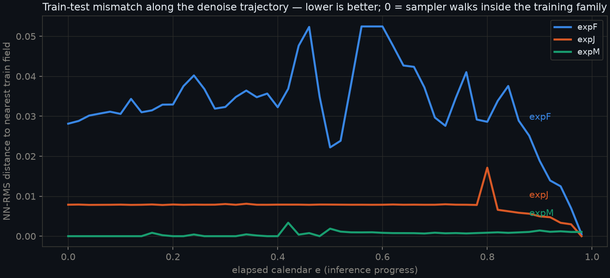
图 12 · 沿推理日历的 NN-RMS：expF 全程 0.03–0.05（峰值在日历中段）；expJ 平坦 0.008；expM ≈0.001。
§6 结论
- 一条主线。knownness 在噪声日历里的位置一路后撤：expF 定起点 → expJ 压成窄带 → expM 交给速率。
分布指标沿这条线单调改善：逐帧 W₁ 0.041→0.039→0.010，钉住率比 3.16×→1.85×→1.02×，常数 t-场步 36.0%→11.1%→10.8%，
"pin+band" 帧内形状复现 2.2%→6.8%→40.9%（推理需要 10%→16%→44%）。
- 失配的性质。不是"推理进入未训练区"（严格未覆盖质量恒为 0）；而是 ① 密度错配、② 预算错配（约一半训练曲线的时间形状推理从不使用；
expF 更有 36.0% 的步 t-场是常数）、③ 形状供给不足（推理需要的"钉住点+噪声带"双峰帧，expF 只供 2.2% 而需要 10%）。
- PatchForcing 的警告在这里是真的，而且方向单一。训练里 1.8–5.1% 的帧含"近干净 token 紧贴纯噪声"，推理里 0 次。
它完全来自 branch-2 的 patch 场——这给出一个具体的、可执行的修法：给 branch-2 加 LTG 式的上界约束（先采 τ 上界再把所有 token 压在其下）即可消除。
- 最反直觉的一条：失配集中在最熟悉的帧（corr ≈ +1.0）—— 而那正是 warp 记忆该发挥作用、seen-PSNR 实际测量的地方。
- 但零失配 ≠ 赢。expM 的分布指标全面最优、状态零 gap，可 50 步首测（@4500）仍落后。它把"对齐"的担子全压给了 attention + Plücker。
双臂 10k 已训完，同步数复评（含信息预算对齐的 expL_uni 参照行）正在跑。
诚实声明与复现
方法边界。① 本页只分析 t-场与 §4.4 的 init 状态二阶矩一致性；不含推理中段 x-空间状态的完整分布（钉住后的状态是模型自己的 x̂₀，取决于模型质量，调度数学得不出）。
② 推理侧是给定 τ 场后的一条确定性轨迹，不是分布；所有 train-vs-infer 指标都是"分布 vs 轨迹占据"的比较。
③ 未覆盖质量对阈值敏感：ε=1e-4 与 1e-3 都给 ≈0；放到 1e-2 会饱和（125 bin 下均匀分布每 bin 才 0.8%）—— 那是阈值假象，不采用。
④ 12 个 clip = 4 个 parade + 8 个按文件名首序，不是随机抽样；k 的形状随 clip 变化很大（16 clip 的 k span 从 −0.50 到 +0.15）。
⑤ 训练侧有效样本数是场抽样数（4800/分支）而非 token 数 —— 一次抽样内 21 帧高度相关，故所有份额只报到 0.1% 并附 ±1.7pp 量级的不确定度。
⑥ 三方法的比较被主干、适配方式与条件通路混杂（14B LoRA vs 1.3B full-FT；warp 通道 vs 平行半区）；expM 的低 W₁ 部分是按构造得来的（训练场家族即采样器日历），不是独立测得的优势。
⑦ 本页全部是调度几何的代理指标，未与 seen-PSNR / unseen-gray 建立任何实证联系 —— "material/severe"等分级是对调度失配程度的描述，不是对模型质量影响的结论。
⑧ 复现性缺陷：Level 1/2 的随机种子由 Python hash() 派生，受 PYTHONHASHSEED 影响，跨进程不可复现（数值结论已由独立重算交叉验证，但精确复现需修此项）。
⑨ expF/expJ 的 τ 场是 cluster_tau 的一次 CPU 重抽（k-means 质心随机初始化），与线上 CUDA 抽样不是同一实现，逐 clip 细节可能略有差异。
复现与校验。共享复刻模块 nd_common.py 已由四个独立 agent 逐行对照 train.py train_step、expH_sync_sampler.py sample_sync、
mcsdf/sampling.py sample_par_sync、cluster_tau_probe.py cluster_tau 与三个 sbatch 配方，未发现复刻缺陷；
主结论由校验者用独立实现（自有 RNG、闭式边缘分布）重算，一致处见上，不一致处已列入更正记录并修正。